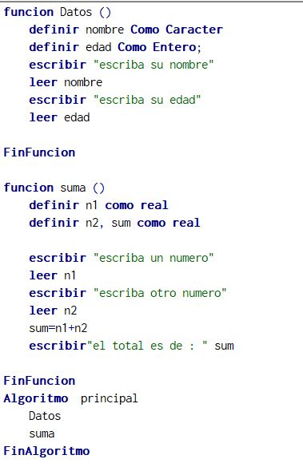
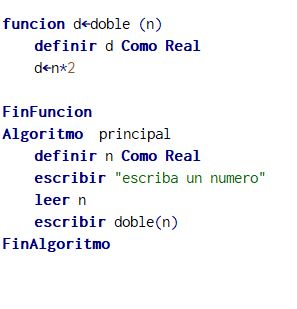

Imagen 1

Imagen 2

Una de las primeras cosas que se aprende antes de programar, es a escribir algoritmos; estos suelen ser básicos, con la intensión de despertar el pensamiento lógico del estudiante; y a medida que se adquieren los conocimientos, ir avanzando en la resolución de ejercicios de mayor complejidad; el desarrollo de algoritmos, se puede abordar en múltiples aplicaciones, Software o plataformas, sin embargo; una que se ha consolidado para este fin es PSeInt; veremos en este artículo este Software PSeInt para que sirve y algunos recursos para el aprendizaje de algoritmos.